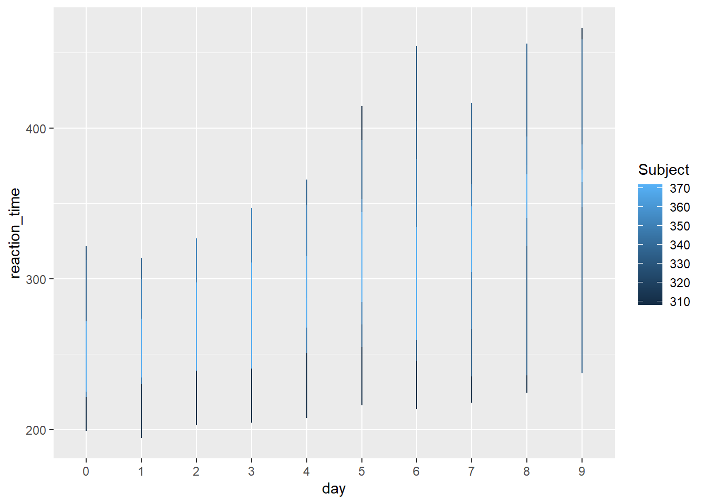
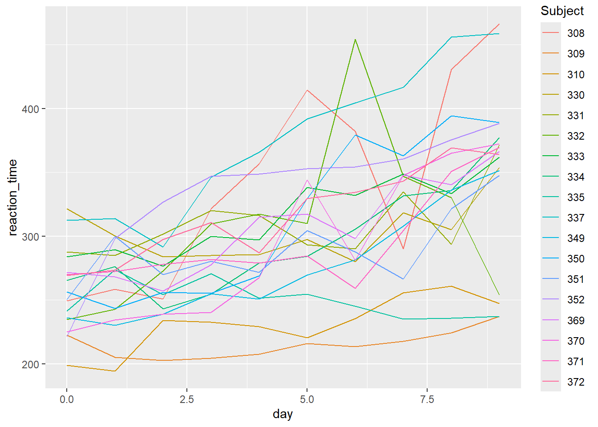

Rows: 344 Columns: 8
── Column specification ────────────────────────────────────────────────────────
Delimiter: ","
chr (3): species, island, sex
dbl (5): bill_length_mm, bill_depth_mm, flipper_length_mm, body_mass_g, year
ℹ Use `spec()` to retrieve the full column specification for this data.
ℹ Specify the column types or set `show_col_types = FALSE` to quiet this message.
# Using count()penguins |>count(species, sex)
# A tibble: 8 × 3
species sex n
<chr> <chr> <int>
1 Adelie female 73
2 Adelie male 73
3 Adelie <NA> 6
4 Chinstrap female 34
5 Chinstrap male 34
6 Gentoo female 58
7 Gentoo male 61
8 Gentoo <NA> 5
# Using group_by() and summarize()penguins |>group_by(sex, species) |>summarize(n())
`summarise()` has grouped output by 'sex'. You can override using the `.groups`
argument.
# A tibble: 8 × 3
# Groups: sex [3]
sex species `n()`
<chr> <chr> <int>
1 female Adelie 73
2 female Chinstrap 34
3 female Gentoo 58
4 male Adelie 73
5 male Chinstrap 34
6 male Gentoo 61
7 <NA> Adelie 6
8 <NA> Gentoo 5
`summarise()` has grouped output by 'species'. You can override using the
`.groups` argument.
# A tibble: 8 × 4
# Groups: species [3]
species sex n freq
<chr> <chr> <int> <dbl>
1 Adelie female 73 0.480
2 Adelie male 73 0.480
3 Adelie <NA> 6 0.0395
4 Chinstrap female 34 0.5
5 Chinstrap male 34 0.5
6 Gentoo female 58 0.468
7 Gentoo male 61 0.492
8 Gentoo <NA> 5 0.0403
# order matters!# Changing the order calculates the proportion of species within each sex
# should get the average mass of each penguin species by sex# but returns error b/c avg_body_mass isn't there anymorepenguin_avg <- penguins |>group_by(species, sex) |>summarize(avg_body_mass =mean(body_mass_g, na.rm =TRUE)) |>na.omit()
`summarise()` has grouped output by 'species'. You can override using the
`.groups` argument.
Example 3
# Units of observation = penguinshead(penguins)
# A tibble: 6 × 8
species island bill_length_mm bill_depth_mm flipper_length_mm body_mass_g
<chr> <chr> <dbl> <dbl> <dbl> <dbl>
1 Adelie Torgersen 39.1 18.7 181 3750
2 Adelie Torgersen 39.5 17.4 186 3800
3 Adelie Torgersen 40.3 18 195 3250
4 Adelie Torgersen NA NA NA NA
5 Adelie Torgersen 36.7 19.3 193 3450
6 Adelie Torgersen 39.3 20.6 190 3650
# ℹ 2 more variables: sex <chr>, year <dbl>
# Units of observation = penguin species/sex groupshead(penguin_avg)
# A tibble: 6 × 3
# Groups: species [3]
species sex avg_body_mass
<chr> <chr> <dbl>
1 Adelie female 3369.
2 Adelie male 4043.
3 Chinstrap female 3527.
4 Chinstrap male 3939.
5 Gentoo female 4680.
6 Gentoo male 5485.
Exercise 4/5
penguin_avg
# A tibble: 6 × 3
# Groups: species [3]
species sex avg_body_mass
<chr> <chr> <dbl>
1 Adelie female 3369.
2 Adelie male 4043.
3 Chinstrap female 3527.
4 Chinstrap male 3939.
5 Gentoo female 4680.
6 Gentoo male 5485.
# widen the dataset# don't lose any information when widening# units = penguin speciespenguin_avg |>pivot_wider(names_from = sex, values_from = avg_body_mass) |>mutate(difference = male-female)
# A tibble: 3 × 4
# Groups: species [3]
species female male difference
<chr> <dbl> <dbl> <dbl>
1 Adelie 3369. 4043. 675.
2 Chinstrap 3527. 3939. 412.
3 Gentoo 4680. 5485. 805.
customer Shish FrenchMeadow DunnBros
1 C coffee soup cookie
2 D maza sandwich coffee
# make longermore_food |>pivot_longer(cols =-customer, values_to ="order", names_to ="restaurant")
# A tibble: 6 × 3
customer restaurant order
<chr> <chr> <chr>
1 C Shish coffee
2 C FrenchMeadow soup
3 C DunnBros cookie
4 D Shish maza
5 D FrenchMeadow sandwich
6 D DunnBros coffee
ggplot(sleep_wide, aes(y = reaction_time, x = day, color = subject))
can’t do using sleep_wide, but could by making it longer (using pivot_longer())
Exercise 2
sleep_long <- sleep_wide |>pivot_longer(cols =-Subject, names_to ="day", values_to ="reaction_time",names_prefix ="day_") # name_prefix dropped the "day_" part of day valueshead(sleep_long)
# plotggplot(sleep_long, aes(x=day, y=reaction_time, color = Subject))+geom_line()

# day is a character and we want it to be a number # subject is integer and we want it to be a category?
Exercise 3
sleep_long <- sleep_wide |>pivot_longer(cols =-Subject,names_to ="day",names_prefix ="day_",values_to ="reaction_time") |>mutate(Subject =as.factor(Subject), day =as.numeric(day))# Check it out# Same data, different classhead(sleep_long)
# Make a line plot of reaction time by day for each subject# Put these all on the same frameggplot(sleep_long, aes(x=day, y=reaction_time, color=Subject))+geom_line()

# Make a line plot of reaction time by day for each subject# Put these all on separate frames (one per subject)ggplot(sleep_long, aes(x=day, y=reaction_time, color=Subject))+geom_line()+facet_wrap(~Subject)
Summary: As the number of days increases, reaction time generally tends to increase. However, the extent to which reaction time increases and the rate that it increases by varies from subject to subject. There are some peaks/spikes for some subjects, like 370 or 332, but not for all.
Exercise 4
# make wide again# don't like how the column labels are just numbers (day is not mentioned)sleep_long |>pivot_wider(names_from = day, values_from = reaction_time) |>head()
# part c# Define nov_1999nov_1999 <- billboard |>filter(date.entered =="1999-11-06") |>select(-track, -date.entered)# Confirm that nov_1999 has 2 rows (songs) and 77 columnsdim(nov_1999)
[1] 2 77
# part dnov_1999 |>pivot_longer(cols=-artist, names_to ="week", values_to ="ranking", names_prefix ="wk") |>mutate(week =as.numeric(week)) |>ggplot(aes(x=week, y = ranking, color = artist))+geom_line()
Warning: Removed 79 rows containing missing values or values outside the scale range
(`geom_line()`).
# A tibble: 15 × 2
raw_guest_list n
<chr> <int>
1 Fareed Zakaria 19
2 Denis Leary 17
3 Brian Williams 16
4 Paul Rudd 13
5 Ricky Gervais 13
6 Tom Brokaw 12
7 Bill O'Reilly 10
8 Reza Aslan 10
9 Richard Lewis 10
10 Will Ferrell 10
11 Sarah Vowell 9
12 Adam Sandler 8
13 Ben Affleck 8
14 Louis C.K. 8
15 Maggie Gyllenhaal 8
`summarise()` has grouped output by 'year'. You can override using the
`.groups` argument.
Source Code
---title: "Reshaping"format: html---Use this file for practice with the **reshaping** in-class activity. Refer to the class website for details.## Warm-Up {.unnumbered}### Exercise 1 {.unnumbered}```{r}library(tidyverse)penguins <-read_csv('https://raw.githubusercontent.com/rfordatascience/tidytuesday/master/data/2020/2020-07-28/penguins.csv')``````{r}# Using count()penguins |>count(species, sex)# Using group_by() and summarize()penguins |>group_by(sex, species) |>summarize(n())# proportionpenguins |>group_by(sex, species) |>summarize(n =n()) |>mutate(proportion = n/sum(n))# relative frequency penguins |>group_by(species, sex) |>summarize(n =n()) |>mutate(freq = n/sum(n))# order matters!# Changing the order calculates the proportion of species within each sex``````{r}# should get the average mass of each penguin species by sex# but returns error b/c avg_body_mass isn't there anymorepenguin_avg <- penguins |>group_by(species, sex) |>summarize(avg_body_mass =mean(body_mass_g, na.rm =TRUE)) |>na.omit()```### Example 3 {.unnumbered}```{r}# Units of observation = penguinshead(penguins)# Units of observation = penguin species/sex groupshead(penguin_avg)```### Exercise 4/5 {.unnumbered}```{r}penguin_avg# widen the dataset# don't lose any information when widening# units = penguin speciespenguin_avg |>pivot_wider(names_from = sex, values_from = avg_body_mass) |>mutate(difference = male-female)```### Exercise 6 {.unnumbered}```{r}penguin_avg_wide <- penguin_avg |>pivot_wider(names_from = sex, values_from = avg_body_mass)penguin_avg_wide# make longer# again, don't lose any information# units = penguin/sex combospenguin_avg_long <- penguin_avg_wide |>pivot_longer(cols=2:3, names_to ="sex", values_to ="avg body mass")penguin_avg_long```### Exercise 7 {.unnumbered}```{r}# create food datafood <-data.frame(customer =rep(c("A", "B"), each =3),restaurant =rep(c("Shish", "FrenchMeadow", "DunnBros"), 2),order =c("falafel", "salad", "coffee", "baklava", "pastry", "tea"))food# make widerfood |>pivot_wider(names_from = restaurant, values_from = order)# add more foodmore_food <-data.frame(customer =c("C", "D"),Shish =c("coffee", "maza"),FrenchMeadow =c("soup", "sandwich"),DunnBros =c("cookie", "coffee"))more_food# make longermore_food |>pivot_longer(cols =-customer, values_to ="order", names_to ="restaurant")```## Exercises### Exercise 1 {.unnumbered}```{r}sleep_wide <-read.csv("https://mac-stat.github.io/data/sleep_wide.csv")head(sleep_wide)```* observations = subjects* ggplot(**sleep_wide**, aes(y = **reaction_time**, x = **day**, color = **subject**))* can't do using sleep_wide, but could by making it longer (using pivot_longer())### Exercise 2 {.unnumbered}```{r}sleep_long <- sleep_wide |>pivot_longer(cols =-Subject, names_to ="day", values_to ="reaction_time",names_prefix ="day_") # name_prefix dropped the "day_" part of day valueshead(sleep_long)# plotggplot(sleep_long, aes(x=day, y=reaction_time, color = Subject))+geom_line()# day is a character and we want it to be a number # subject is integer and we want it to be a category?```### Exercise 3 {.unnumbered}```{r}sleep_long <- sleep_wide |>pivot_longer(cols =-Subject,names_to ="day",names_prefix ="day_",values_to ="reaction_time") |>mutate(Subject =as.factor(Subject), day =as.numeric(day))# Check it out# Same data, different classhead(sleep_long)# now subject is a factor; day is a number``````{r}# Make a line plot of reaction time by day for each subject# Put these all on the same frameggplot(sleep_long, aes(x=day, y=reaction_time, color=Subject))+geom_line()# Make a line plot of reaction time by day for each subject# Put these all on separate frames (one per subject)ggplot(sleep_long, aes(x=day, y=reaction_time, color=Subject))+geom_line()+facet_wrap(~Subject)```**Summary:**As the number of days increases, reaction time generally tends to increase. However, the extent to which reaction time increases and the rate that it increases by varies from subject to subject. There are some peaks/spikes for some subjects, like 370 or 332, but not for all.### Exercise 4 {.unnumbered}```{r}# make wide again# don't like how the column labels are just numbers (day is not mentioned)sleep_long |>pivot_wider(names_from = day, values_from = reaction_time) |>head()# add column titles using names_prefix argumentsleep_long |>pivot_wider(names_from = day, values_from = reaction_time, names_prefix ="day_") |>head()```### Exercise 5 {.unnumbered}```{r}# Load datalibrary(tidyr)data("billboard")# Check it outhead(billboard)``````{r}# part aggplot(billboard, aes(x=wk1, y=wk2))+geom_point()+geom_abline(intercept =0, slope =1)# part bbillboard |>mutate(improved = wk2 > wk1) |>filter(improved =="TRUE") |>head()# part c# Define nov_1999nov_1999 <- billboard |>filter(date.entered =="1999-11-06") |>select(-track, -date.entered)# Confirm that nov_1999 has 2 rows (songs) and 77 columnsdim(nov_1999)``````{r}# part dnov_1999 |>pivot_longer(cols=-artist, names_to ="week", values_to ="ranking", names_prefix ="wk") |>mutate(week =as.numeric(week)) |>ggplot(aes(x=week, y = ranking, color = artist))+geom_line()```### Exercise 6 {.unnumbered}```{r}library(fivethirtyeight)data("daily_show_guests")daily <- daily_show_guests```#### Part a {.unnumbered}```{r}daily |>count(raw_guest_list) |>arrange(desc(n)) |>head(15)```#### Part b {.unnumbered}```{r}daily2 <- daily |>count(year, raw_guest_list) |>group_by(raw_guest_list) |>mutate(total =sum(n)) |>pivot_wider(values_from = n, names_from = year, values_fill =0) |>arrange(desc(total)) |>head(15)daily2```#### part c {.unnumbered}```{r}daily |>count(group)plot_data <- daily |>mutate(broad_group =case_when( group %in%c("Acting", "Athletics", "Comedy", "Musician") ~"Acting, Comedy & Music", group %in%c("Media", "media", "Science", "Academic", "Consultant", "Clergy") ~"Media", group %in%c("Politician", "Political Aide", "Government", "Military", "Business", "Advocacy") ~"Government and Politics",.default =NA )) |>filter(!is.na(broad_group))``````{r}plot_data |>group_by(year, broad_group) |>summarize(n =n()) |>mutate(freq = n/sum(n)) |>ggplot(aes(x=year, y=freq, color=broad_group))+geom_line()```